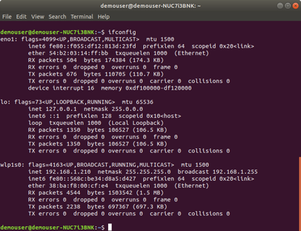
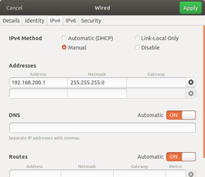

Install the QPE Software
Quuppa software is Java-based and can be used across different Operating Systems (OS), as long as the Quuppa server has a Java runtime environment installed. However, it should be noted that Quuppa software is primarily tested on Ubuntu and therefore Quuppa recommends using Ubuntu whenever possible. Please also note that:
-
Some of the QPE functionalities may be OS dependent; e.g. the software tool interface may look and/or behave slightly differently depending on the OS. Quuppa does not take responsibility for software not working correctly outside of the recommended OS environments.
-
Depending on the installed distributions or OS version, some of the applications may already be installed by default. In these cases, please ensure that the machine is running the latest compatible release.
For more information about tested OS version, please see our Compatibility Guide, or contact the Quuppa team through the Quuppa Forum.
The newest Quuppa software releases are available at the Quuppa Customer Portal. To receive information about relevant updates in the future, please enable email notifications in the Quuppa Customer Portal.
1. Install Tomcat and QPE
- Start by installing the latest Ubuntu LTS release (e.g. Ubuntu 20.04 LTS): http://www.ubuntu.com/download/.
- Update the package information from any repositories that have been registered
as sources:
sudo apt-get update - Install the latest available OpenJDK JRE version for your chosen version of
Ubuntu (e.g. OpenJDK Java 18):
sudo apt install openjdk-18-jre - Check that system time is managed and if not, then install the Network Time
Protocol (NTP) service:
if ! dpkg-query -W -f='${Status}' systemd-timesyncd | grep "ok installed"; then sudo apt-get install ntp; fi - Create directory structure “/opt/quuppa/PE”:
sudo mkdir -p /opt/quuppa/PEEnsure that the quuppa directory and all folders below it have all the needed rights by running:
sudo chmod -R 755 /opt/quuppaPlease confirm with your internal IT administrator first before assigning any other access rights for the quuppa and PE directories.
- Install Tomcat:
sudo apt-get install tomcat9Note: The examples in this document install Tomcat 9. You could also install Tomcat 8, if you prefer. However, please note that the QPE is not currently compatible with Tomcat 10.- Create a file ‘setenv.sh’:
printf "export CATALINA_OPTS=\"-XX:+UseZGC -XX:MaxRAMPercentage=70 -XX:-ZUncommit -Djava.awt.headless=true -Dproject.folder=/opt/quuppa/PE\"" | sudo tee /usr/share/tomcat9/bin/setenv.shPlease refer to the Java Virtual Machine Startup Parameters section for more about the available optional start-up parameters.
- Make the Tomcat user the owner of the quuppa and
PE directories:
sudo chown tomcat:tomcat /opt/quuppaFollowed by:
sudo chown tomcat:tomcat /opt/quuppa/PE - Add an exception to add Tomcat write directories:
sudo mkdir /etc/systemd/system/tomcat9.service.d && printf "[Service]\nReadWritePaths=/opt/quuppa\n" | sudo tee /etc/systemd/system/tomcat9.service.d/override.conf
- Create a file ‘setenv.sh’:
- Deploy the QPE:
- Stop Tomcat:
sudo service tomcat9 stop - Download the latest Quuppa applications file
QuuppaReleasePackage-[xxx]-ServerAndApps.zip
from the Quuppa Customer Portal's Downloads section and
extract the files. Copy the file qpe-web-[xxx].war
to the directory /var/lib/tomcat9/webapps/ and
rename to ‘qpe.war’.
For example, if you have saved the zip file in your Downloads folder and extracted there into QuuppaServerAndApps folder, you can apply command:
sudo cp /home/<your_user_name>/Downloads/QuuppaServerAndApps/<qpe-web-[xxx].war> /var/lib/tomcat9/webapps/qpe.warWarning: If you are doing a system update, before copying the new qpe.war file, remove both the previous war file and related directory (which has the same name as the war file) from the “…./tomcat9/webapps/” directory.This is because when Apache Tomcat runs, it extracts the qpe.war file in a qpe directory. By deleting the old war file and directory before running the new qpe.war file, you ensure that Tomcat will run only one qpe.war instance at the time. To remove the file and directory in the terminal, run:
sudo rm -rf /var/lib/tomcat9/webapps/qpe* - Start Tomcat:
sudo service tomcat9 start -
Check the Tomcat status to verify that everything is running as it should:
sudo service tomcat9 statusTip: If the status shows an error message that the JDK or the JRE was not found, JAVA_HOME may not be set up properly or then Tomcat is having trouble finding your Java installation path for some other reason. To fix this, open the Tomcat file using the commandsudo nano /etc/default/tomcat9and add the lineJAVA_HOME=/usr/lib/jvm/java-18-openjdk-amd64. Then, if prompted by the system, run thesystemctl daemon-reloadcommand. Now you can start Tomcat again using the commandsudo service tomcat9 startand check the status using the commandsudo service tomcat9 status(just like in steps c and d). - Open your browser and point it to http://localhost:8080/qpe/ to check that the QPE is running.
Note: If needed, please make sure to provide all of the needed access rights to files and directories. - Stop Tomcat:
2. Configure the Network Settings
If the Quuppa server is installed as a standalone system, you also need to run a DHCP server on it. For information on how to install a DHCP server, please see the Install the DHCP Server section.
This section will walk you through configuring the network settings for your system. The example shown is for a simple network configurations. For more information about configuring your network, please refer to our Network Configuration Guidelines for Quuppa Systems documentation.
- Install
net-tools, a collection of base network utilities:sudo apt install net-tools - Check your network interfaces by opening a terminal window and entering
ifconfig.
- Open the Network Manager tool for network configuration. Configure the
interface (e.g. wired) that you will use to connect to the Locators to use a
static IP address and subnet (e.g. 192.168.200.1/24).
